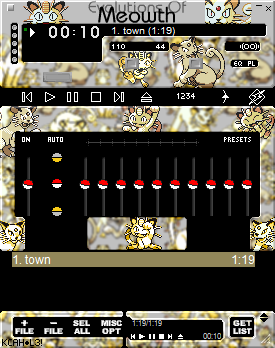
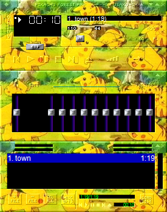
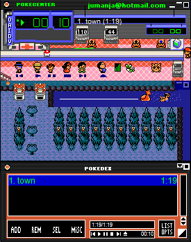

Pokémon Media Player Skins
(Winamp)

Meowth
Archived from an old version of Nintendo of Norway's website (nintendo.no).

DOWNLOAD
 .wsz file (131 KB)
.wsz file (131 KB)
Pikachu
Archived from an old version of Nintendo of Norway's website (nintendo.no).

DOWNLOAD
.wsz file (284 KB)
Pokémon Gold and Silver
Archived from an old version of Nintendo of Norway's website (nintendo.no).

DOWNLOAD
.wsz file (29.7 KB)